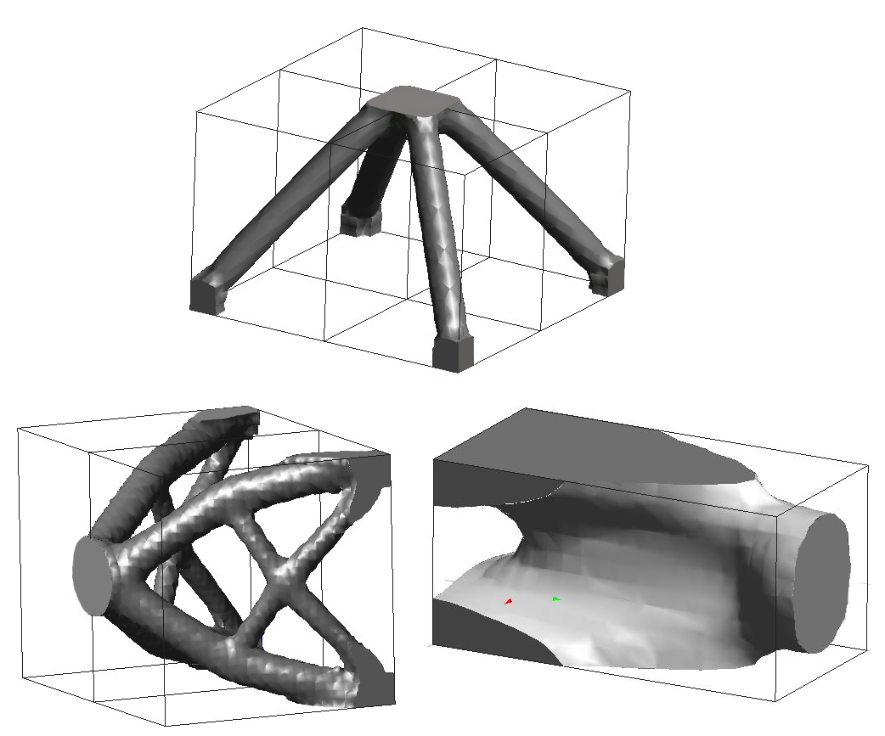

Features
Dive deeper into the modules that make up Swan, the key part of its agile workflow.
Quick rundown
How do you represent the domain?
Swan currently includes 3 methods to represent the domain:
- Density-based methods
- Phase-field methods
- Level-set (implicit functions)
What can I use Swan for?
Swan ...
- Additive manufacturing
- Lattice structures
- Compliant mechanism designs
Which constraints can I use?
So far, Swan includes the following constraints:
- Compliance
- Volume
- Limiting von Mises stress norm
- Minimum length scales
- Overhang angle
- Perimeter
- Eigenvalue problems
Examples
Nyt lähden tanssimaan
Niinku cha cha cha, enkä pelkääkään tätä maailmaa.Mä oon tulossa!
Pidän kaksin käsin kiini juomista niinku...Tänään oon se mies
Pidän kaksin käsin kiini juomista niinku...Tänään oon se mies
Pidän kaksin käsin kiini juomista niinku...Let me cook
He's on, he's on it...Try it yourself
Swan is completely free and open-source, so download the code and start optimizing! Feel free to contact us if you want to add a new feature or are not quite sure how to tackle your problem.